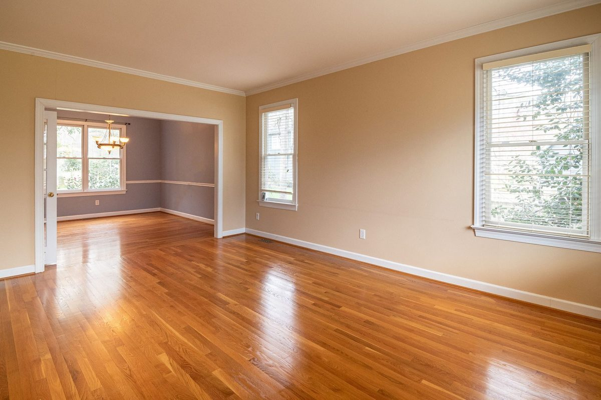

Crews on call now across Plano
Hardwood Floor Water Damage Restoration in Plano, TX
Your hardwood floors are cupping, buckling, or feel spongy underfoot. Water got underneath them, from a slab leak, burst pipe, appliance overflow, or a flood you thought you cleaned up with towels, and now the wood is absorbing moisture from below. The first 12 to 24 hours determine whether your $15,000 to $30,000 hardwood floors can be saved or need full replacement. Call (214) 833-4785 now.
- ✓ Solid & engineered hardwood
- ✓ Injectidry mat systems
- ✓ Daily moisture checks
Call Now: Hardwood Floor Drying | Contact Us
Quick Answer
Can It Be Saved?
Can Water-Damaged Hardwood Floors Be Saved?
Often, yes. If drying starts within a day or two, negative-pressure floor mats pull trapped water out and flatten cupped boards, saving many Plano hardwood floors from full replacement.
Can Water-Damaged Hardwood Floors Be Saved in Plano?
It depends on how long the water sat and how quickly professional drying starts:
| Timeframe | Condition | Can It Be Saved? |
|---|---|---|
| 0-12 hours | Surface moisture, minimal cupping | Almost always, floor mat drying |
| 12-24 hours | Moderate cupping, moisture underneath | Usually, floor mats + LGR dehumidifiers |
| 24-48 hours | Significant cupping, early buckling | Sometimes, depends on wood species and moisture level |
| 48-72 hours | Severe cupping, buckling, boards lifting | Unlikely, wood fiber damage may be permanent |
| 1 week+ | Warped, delaminated, mold on underside | Replacement needed |
The single most important factor is speed. A $200 emergency floor mat setup within 12 hours can save a floor that costs $15,000 to $30,000 to replace after 72 hours. Call (214) 833-4785 the moment your hardwood floors get wet.
Damage Types
Types of Hardwood Floor Water Damage
Cupping
Board edges rise higher than the center, creating a washboard appearance. Cupping means the bottom of the board is wetter than the top, moisture is coming from underneath. Early cupping is reversible with proper drying. Severe cupping that doesn't flatten after drying may require sanding and refinishing.
Buckling
Boards lift completely off the subfloor, creating humps and gaps. Buckling means the wood has absorbed so much moisture it expanded beyond the expansion gap at the walls. Buckled boards often can't be saved and need replacement, though the surrounding flat boards may be salvageable.
Crowning
The opposite of cupping, board centers rise higher than edges. Crowning happens when wet cupped floors are sanded too soon. The top surface is sanded flat while the bottom is still wet. When the bottom finally dries, the board reverses and crowns. This is why you never sand a wet hardwood floor, dry it first, wait 30 days, then sand.
Black Staining (Tannin Bleed)
Water reacting with iron (nails, staples, metal furniture legs) creates black stains in oak and other tannin-rich hardwoods. Light stains can sometimes be removed with oxalic acid. Deep black stains penetrate the wood grain and can't be sanded out, those boards need replacement.
How It Works
How Hardwood Floor Drying Works
Floor Mat Systems
Hardwood floor mat systems are specialized drying panels that lay flat on the wood surface. They create controlled vacuum and apply gentle heat through the surface of the wood, pulling trapped moisture upward through the grain without removing boards. The mats connect to a manifold that controls vacuum pressure and temperature, too much heat cracks the wood, too little doesn't dry it fast enough. Our technicians calibrate the system based on wood species, board thickness, moisture content and ambient conditions.
LGR Dehumidifiers
While floor mats pull moisture through the wood, LGR dehumidifiers lower the ambient humidity in the room to create favorable drying conditions. The combination of floor mats pulling moisture up and dehumidifiers capturing it from the air is the fastest way to dry hardwood without damage.
Daily Moisture Monitoring
We take moisture readings from the hardwood surface, from the subfloor (through access points or from below on second floors), and from adjacent materials daily. Readings are logged until the wood reaches its target moisture content, typically 6% to 9% for hardwood in North Texas, depending on species.
Kitchens & Slabs
Water Got Under Hardwood Floors in the Kitchen?
Kitchens are the most common spot for hardwood damage in West Plano homes, where wood flooring often runs continuously through the kitchen, breakfast area and family room. Fridge lines, dishwashers and sink supply lines are the usual causes.
When we save warped wood floors after a fridge leak, we also dry the cabinets and toe-kicks next to the floor, because water under cabinets can keep re-wetting the boards.
Hardwood Over Concrete Slabs
Many Plano homes have hardwood glued or nailed over a concrete slab. Water trapped between wood and concrete is especially hard to remove without mats. After a slab leak, the slab itself must be dried too, or moisture will keep moving up into the wood.

Measured, Not Guessed
Monitoring Moisture Until the Floor Is Ready
Wood has a normal moisture level for its environment, called equilibrium moisture content. We measure unaffected boards in your home as the target, then dry the wet area until it matches. Most hardwood floors take five to fourteen days.
Why Sanding a Cupped Floor Too Early Ruins It. If you sand a cupped floor while it's still wet, you flatten the raised edges. Then, as the floor dries and the boards flatten naturally, the center ends up higher than the edges: permanent crowning. Always wait for the floor to be confirmed dry and settled before refinishing.
When Replacement Is Needed
Some floors can't be saved: contaminated water, boards that split or delaminated, or floors that were wet for too long. When that happens, we remove the damaged section, dry the subfloor or slab, and coordinate replacement, matching species, width and finish as closely as possible.
Insurance claims sometimes involve continuous flooring runs: if damaged flooring runs into undamaged rooms with no break, matching may require replacing more than the wet area. Your adjuster decides based on your policy, and we document the layout clearly.
Engineered Hardwood Water Damage
Engineered hardwood has a thin wood top layer over a plywood base. It handles moisture better than solid wood in some ways, but the layers can separate if it's soaked too long. Engineered hardwood water damage salvage is possible when drying starts early and there's no delamination.
Common Causes
Common Hardwood Floor Water Damage Causes in Plano
Slab leaks: Water migrating under hardwood across the slab surface for days or weeks. See slab leak damage
Appliance leaks: Dishwasher, refrigerator ice maker, or washing machine overflow reaching adjacent hardwood. See appliance leak damage
Burst pipes: Wall or attic pipe failure sending water onto hardwood from above or from wall cavities. See burst pipe damage
Bathroom overflow: Toilet or sink overflow running from tile onto adjacent hardwood in hallway or bedroom. See bathroom overflow
Mopping with excess water: Chronic over-mopping introduces moisture through surface finish micro-cracks over time
FAQ
Hardwood Floor FAQs
Should I pull up my wet hardwood floors? +
Not yet. If the water loss happened within the last 24 hours, floor mat drying can likely save the wood. Pulling up hardwood is a last resort, boards are tongue-and-groove and often can't be reinstalled once removed. Call (214) 833-4785 before pulling up anything.
My hardwood cupped after a leak but the floor feels dry now, is it okay? +
No. Cupping means the underside of the boards is still wetter than the top. The surface may feel dry while moisture is trapped between the board bottom and the subfloor. If the boards don't flatten on their own within a few weeks, the moisture imbalance has permanently deformed the wood and sanding or replacement will be needed. A moisture meter reading confirms the actual condition. Call (214) 833-4785.
How much does it cost to replace water-damaged hardwood floors? +
Depending on species, grade, and area, hardwood floor replacement in Plano typically runs $8 to $15 per square foot installed, including removal and disposal of the damaged floor. A 500-square-foot living room could cost $4,000 to $7,500 to replace. Emergency floor mat drying within the first 24 hours is a fraction of that cost. Call (214) 833-4785.
Does insurance cover hardwood floor water damage? +
Yes, if the water damage is from a sudden and accidental event (burst pipe, appliance failure, water heater tank failure), your homeowner policy typically covers hardwood floor drying or replacement. Gradual damage from chronic mopping or a slow undetected leak may be treated as maintenance. We document the cause and damage in Xactimate for your adjuster. Call (214) 833-4785.
Hardwood Floors Wet Right Now? Call (214) 833-4785
Every hour you wait, the wood absorbs more moisture and your chances of saving it drop. Call (214) 833-4785, 24/7 IICRC certified crew dispatched with floor mat systems, LGR dehumidifiers and Protimeter moisture meters. We've saved hardwood floors that homeowners were told needed full replacement.
Related Services
Related Services in Plano


Hardwood Floors Wet Right Now? Call (214) 833-4785
Every hour you wait, the wood absorbs more moisture and your chances of saving it drop. Call (214) 833-4785, 24/7 IICRC certified crew dispatched with floor mat systems, LGR dehumidifiers and Protimeter moisture meters. We've saved hardwood floors that homeowners were told needed full replacement.
☎ Call (214) 833-4785
Ready when you are
Don't Wait on Water Damage
- ✓ Live answer 24/7, every day of the year
- ✓ Crew dispatched immediately
- ✓ On-site assessment
- ✓ Insurance-ready documentation